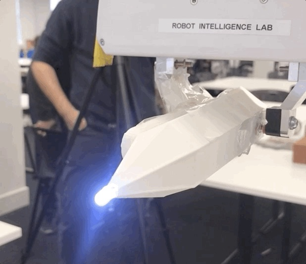
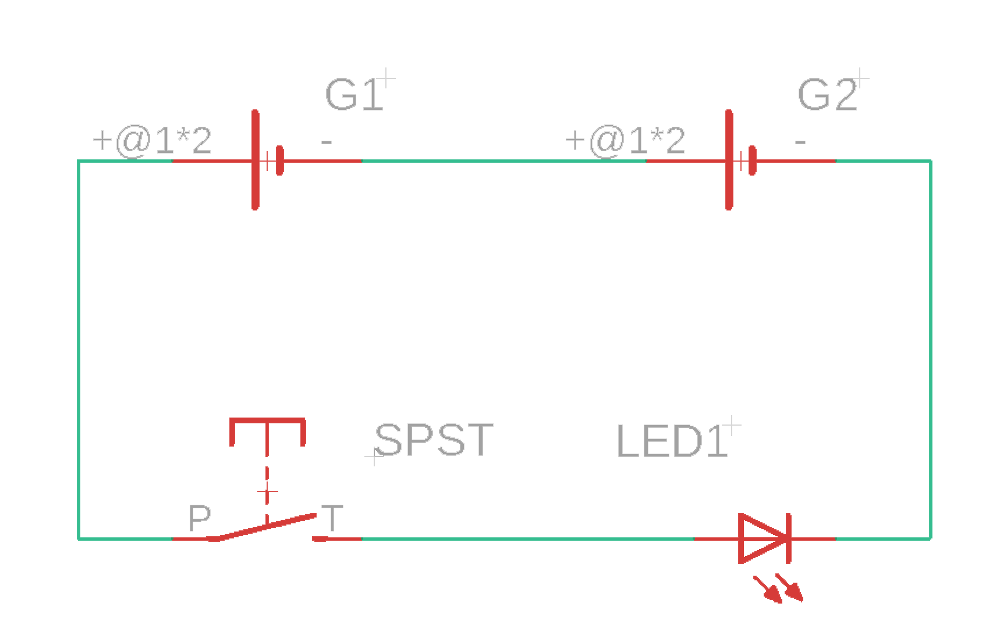

Light Source
A custom light torch was designed and manufactured to comply towards the dimensions of the Franka Emika end-effector gripper. The STL file of the light stick can be found here and be FDM printed on 0.2mm layer height at 30% infill.

The light unit was designed as a hexagonal shape to be held securely on the end effector with a cone tip to direct the light source towards the centre of the unit.
A second iteration was made to allow for the unit to be picked up automatically along with a single pole single throw (SPST) switch attached for the light source to stay on when the end effector gripper is closed.
Attachment
To add in the motion of the light stick being picked up, a magnetic strip was designed to be permanently attached on one end of the end effector. Magnets of the opposite polarity were attached on the main light unit to ensure it remains attached on the end effector when the gripper is opened.
Circuitry
The internal circuitry of the light unit consists of two 1.5V AA Batteries, connected to an SPST switch and an LED. This would ensure that when the end effector gripper is closed, the light is turned on and vice versa when the gripper is open. This would also remove unwanted bright spots and allow for the possibility of continuous images within the same frame.

Links
Links to purchase external components